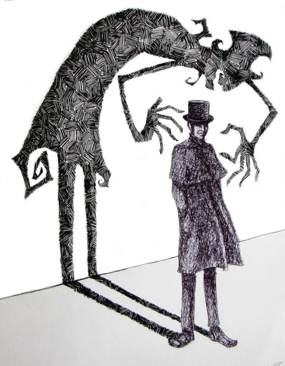
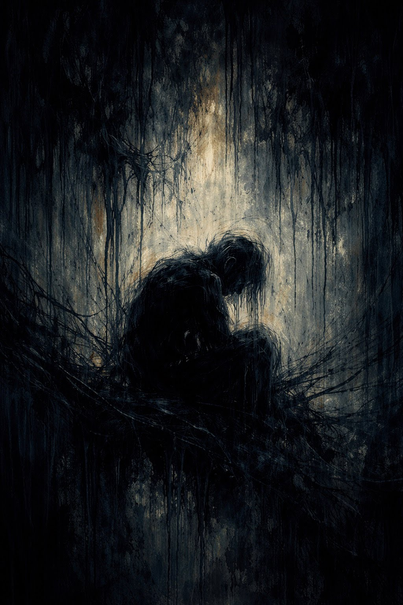
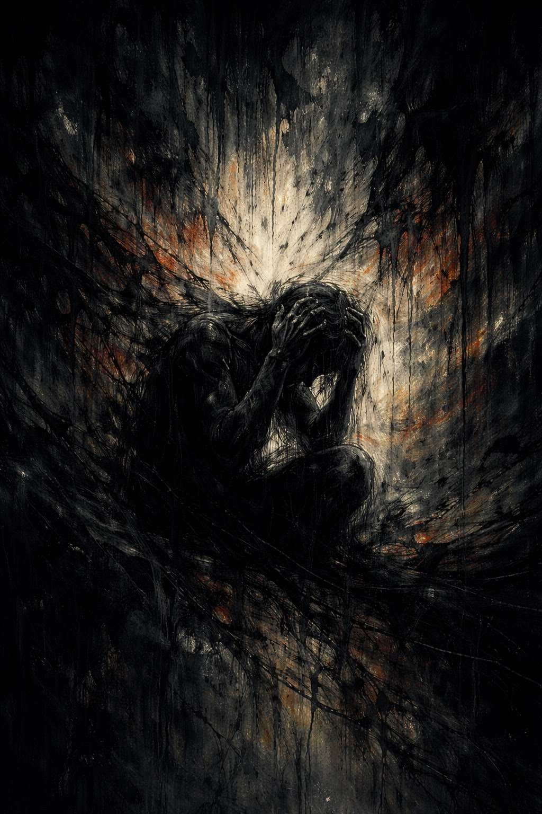
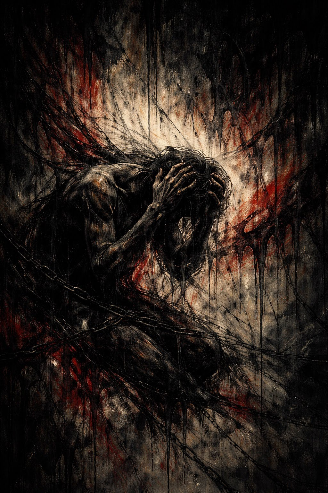
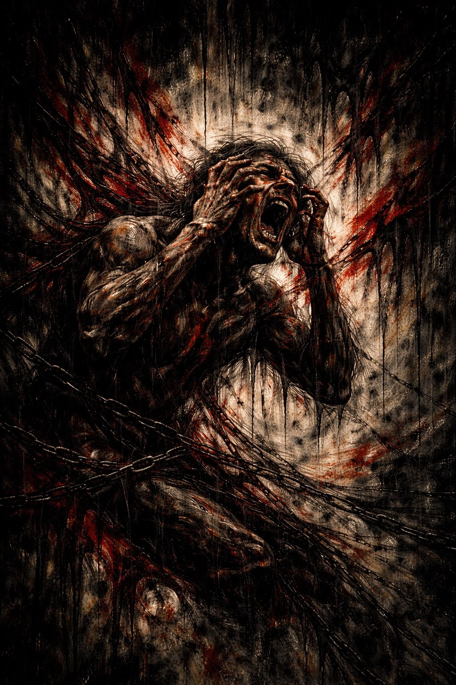
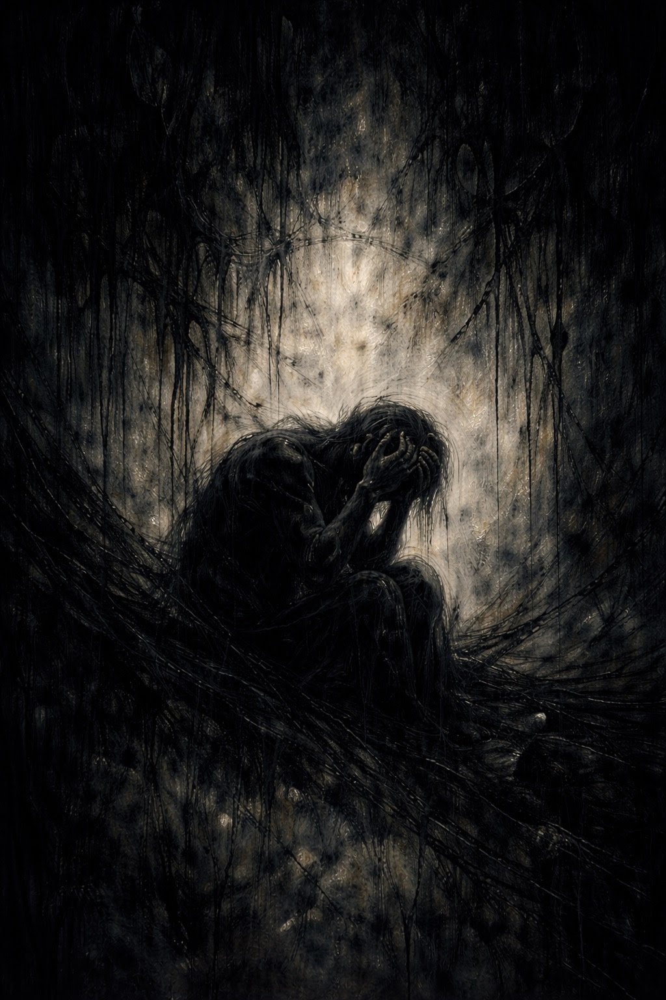
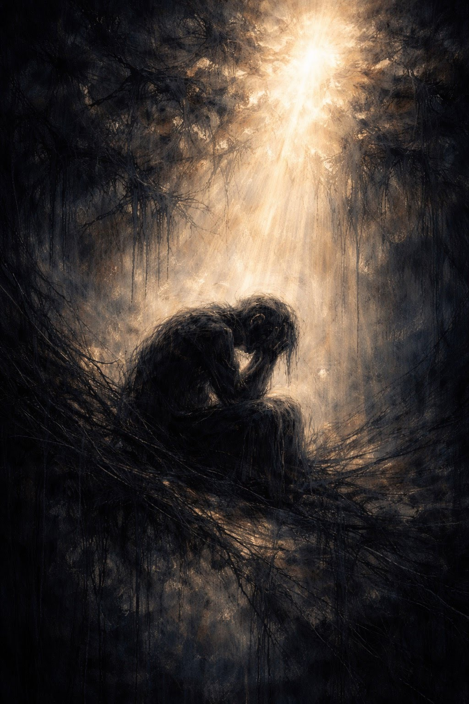
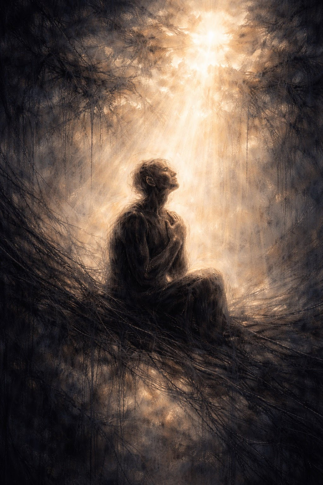

Hurt
What have you hurt that you wish you could go back to?
Step 8 — made a list of persons we had harmed.
Tiquer Media
Tonight's prompts. Step up when you're ready.
The Step Up is a creative prompt board for this meeting. Each card points to a piece of art — a song, a poem, a painting, a film, a dance — and asks one question about your recovery.
You don't have to analyze it. You don't have to have the right answer. You just have to be willing to step up and share what it brought up.
Pick a card that pulls at you. If nothing pulls, wait. Something will.
Choose a card. Share when you're ready. Mark it claimed when you're done.
What have you hurt that you wish you could go back to?
Step 8 — made a list of persons we had harmed.
What are you still shaking off? What does it feel like when it starts to loosen?
Step 6 — entirely ready to have defects of character removed.
What can you see now that you couldn't see when you were using?
Step 9 Promises — we will suddenly realize that God is doing for us what we could not do for ourselves.
Describe a moment in recovery that felt like golden time — unhurried, earned, yours.
The Promises — we will know a new freedom and a new happiness.
Who have you leaned on? Who has leaned on you? What did that cost you — and what did it give you?
Step 12 — carry the message, practice principles in all affairs.
What part of your identity did you almost lose — and what does it mean to carry it forward sober?
Coming home to yourself — the person underneath the using.
Fear is the driver, or love is — which one has been steering you, and when did that change?
Step 3 — made a decision to turn our will and our lives over.
What do you want people to remember about you when this chapter is over?
Step 10 — continued to take personal inventory; living forward.
On recovery vs. destruction
"But when I got sober, I wanted to know if stories about getting better could ever be as compelling as stories about falling apart. I needed to believe they could… I wanted a story I could get sober in."
On shared experience
"So much of recovery is a fight against exceptionalism — that necessary act of saying, What I've lived has been lived before, will be lived again, is nothing special but still holds meaning, still holds truth."
On sobriety and reality
"Sobriety didn't fix everything. But it forced me to face everything. This book is about the moments that come after you stop drinking… when the real work begins."
Jamison writes that recovery is not a story of getting better — it's a story of getting honest. What's the most honest thing you've said out loud about yourself in recovery?
Step 4 — searching and fearless moral inventory.
On drunk time vs. sober time
"Alcohol time is very different from sober time. Alcohol time is slippery whereas sober time is like cat hair. You just can't get rid of it."
On not seeing it alone
"Stars should not be seen alone. That's why there are so many. Two people should stand together and look at them. One person alone will surely miss the good ones."
On the blank in your head
"My mind went absolutely blank. The kind of blank where it's not that you're forgetting something, but your mind is not allowing you to remember. It's a thicker, dumber blank. Like trying to run underwater in a dream."
On a higher power
"I know that God existed as the Correct Answer inside my chest."
On structure
"The problem with not having anybody to tell you what to do, I understood, is that there was nobody to tell you what not to do."
On what loss adds
"Because all of us are made not only of what we have but of what we lost. And loss is not a subtraction. As an experience, it is an addition."
Burroughs describes sobriety as losing the one thing that organized your whole life. What organized your life before — and what organizes it now?
Step 2 — restoring order; finding a new center.
Karr describes the moment she asked for help as the most terrifying and most necessary thing she ever did. What was your version of that moment?
Step 3 — turning it over; the surrender that opened the door.
Carr investigated his own addiction like a reporter and discovered he was the monster, not the victim, of his own story. What did you discover when you finally looked at your own story clearly?
Steps 4 and 5 — the inventory; seeing yourself as you actually were.
Lamott writes about getting sober as arriving somewhere she didn't know she was trying to get to. Where have you arrived that you didn't know you were heading?
Step 11 — sought through prayer and meditation; finding the life underneath.

"The shadow on the wall is part of the same person casting it. It can't be separated — only acknowledged. What is the shadow side of you that recovery has asked you to face?"
What part of yourself did you try to keep hidden — from others or from yourself — before you got sober?
When did you last feel fully in your body — joyful, unguarded, just moving? What would it take to get back there?
The Promises — we will intuitively know how to handle situations which used to baffle us.
Recovery asks you to show up every single day. What does that daily showing-up feel like in your body right now?
One day at a time — the discipline of presence.
What did your relationship with your addiction look like from the outside? Who could see it when you couldn't?
Step 1 — admitted we were powerless; the grip that wouldn't let go.
Who do you wish could see you now — sober, present, here? What would you want them to know?
Grief and gratitude living in the same moment.
What broke you that you didn't think could be fixed? What does fixed even mean to you now?
Step 2 — came to believe that a power greater than ourselves could restore us to sanity.
When did you know — really know — that something had to change? What did that moment look like?
Step 1 — the moment of admission; powerlessness made visible.
What did relapse teach you that sobriety alone couldn't? What do you know now that you didn't know before?
Progress not perfection; coming back after going back out.
"Tell me something — are you happy in this modern world?" Shallow asks whether what looks fine on the surface is actually enough. What part of your life looked fine from the outside but was starving you in the shallow end?
Step 1 — admitting that what looked manageable was actually killing us.
What were the people closest to you protecting you from seeing? When did you finally let them show you?
Step 5 — admitted to another human being the exact nature of our wrongs.
What did you lose that you can't get back — and how have you made peace with that?
Step 9 — making amends; accepting what amends cannot fix.
Visual Art · A featured sequence
An original digital art sequence by a member of this group
A member of this group created these eight images using AI — one emotional state at a time — to trace his own journey through addiction and into recovery. He used the prompts below exactly as he texted them, and then he shared the images with us. We thought you might want to share what they bring up.
Loneliness

"A figure alone in the dark, surrounded by dripping shadows. When did loneliness become a companion you couldn't shake? What did being alone with yourself feel like at your worst?"
Despair

"The darkness here has a different color — orange and heat, like something burning. Despair isn't quiet; sometimes it's fire. What did despair feel like in your body — not just your mind?"
Tortured Guilt

"Red. Chains. The figure is tangled in itself. Guilt can chain us to what we did, or it can move us toward making things right. Where has guilt lived in your recovery — as a cage or as a compass?"
Anger

"The scream. Chains breaking loose. Anger is one of the few emotions that feels like power — but in addiction, it was usually a cover. What was underneath your anger? What was it protecting?"
Hopelessness

"After the fire and the scream — the quiet. This one feels like collapse, like nothing left to fight with. Have you been in this place? What does hopelessness feel like — and what did it take to take the next step anyway?"
Hope

"The first real light. Still dark around the edges — but something breaking through from above. Where did hope first crack through for you? Was it something someone said? Something you felt? Something you couldn't explain?"
Acceptance

"The figure is sitting up now. Face turned toward the light. Not rescued — but open. What did acceptance feel like when it finally came? What did you have to let go of to get there?"
Surrender & Serenity
"Lotus. Full light. Still in the same tangled world — but settled inside it. Not escape. Presence. What does serenity mean to you today? When do you feel it? What does it feel like in your body when you're in it?"
"Face it, trace it, replace it."
— John, member of this group